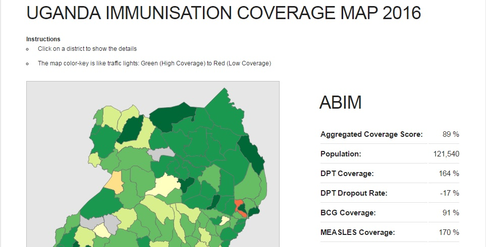
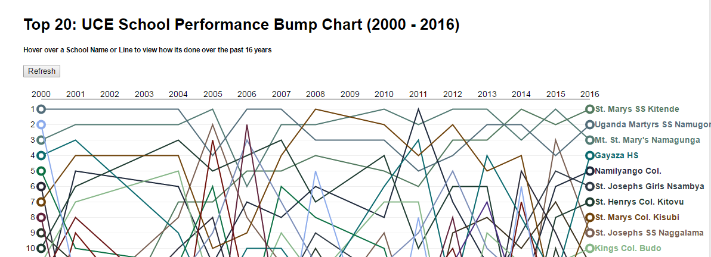
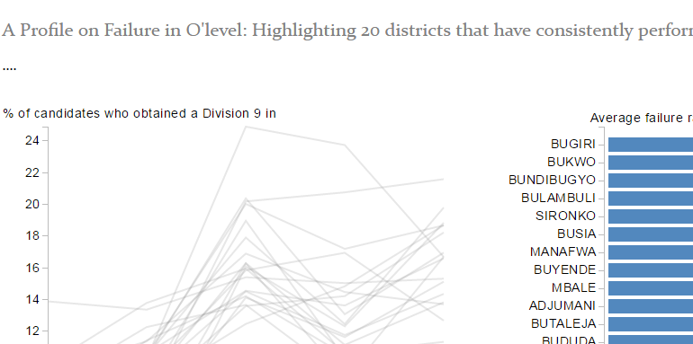
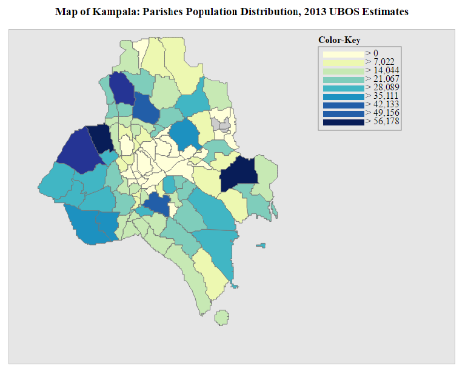
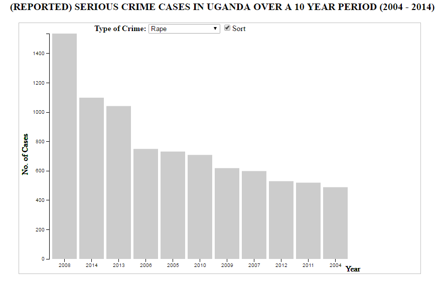

On this page I host some experimental data visualizations that I've been working on, whenever I get the chance ...
Click the thumbnail to view the original project!

Immunisation Coverage in Uganda
January 2017
Theme: Health

UCE School Performance Bumpchart
February 2017
Theme: Education

UCE Failure Rate Profile by District
February 2017
Theme: Education

Kampala District Population Distribution by Parish
March 2017
Theme: Demographics

Serious Crime Cases in Uganda over a 10 year period
March 2017
Theme: Crime